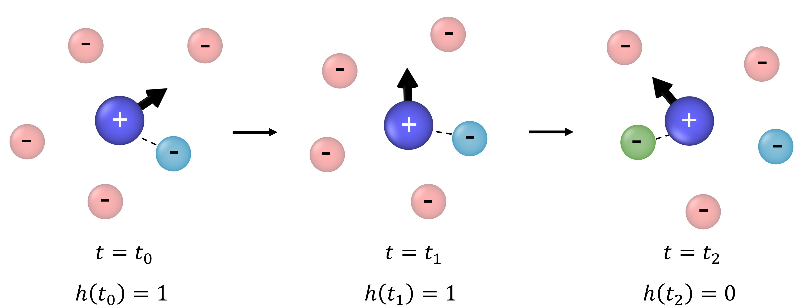
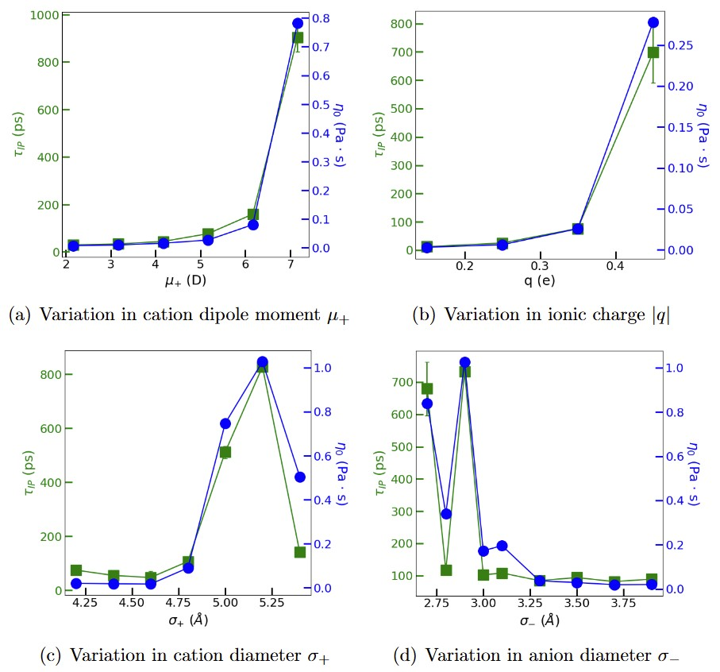

Design rules
Viscosity and Ion-Pair Lifetime Across Ionic-Liquid Parameter Space
The question
If you could turn one molecular "knob" to make an ionic liquid less viscous, which knob should it be? Experiments can only compare the chemistries that get synthesized; a coarse-grained model lets us vary one property at a time, cleanly, across ranges no single family of compounds can span.
What we did
Using the validated Stockmayer framework, we systematically varied electric charge, dipole moment and dipole mobility, and ion size, computing viscosity for each point in parameter space with Green-Kubo methods in LAMMPS. We also relate the changes in viscosity to a microscopic explanation using the ion-pair lifetimes which provides a measure of how long the oppositely-charged ions in ionic liquid remains paired.

What we found
Viscosity monotonically increases with ionic charge and dipole moment, but non-monotonically changes with ion size. This means that stronger electrostatic and dipolar interactions increase viscosity while a competition between packing and electrostatics drives the non-monotonic changes of viscoisty with ion size. Ion-pair lifetimes track viscosity qualitatively, suggesting that longer-lived ion-pairs produce more viscous ionic liquid. This provides molecular-level design rules for engineering low-viscosity ionic liquids.
